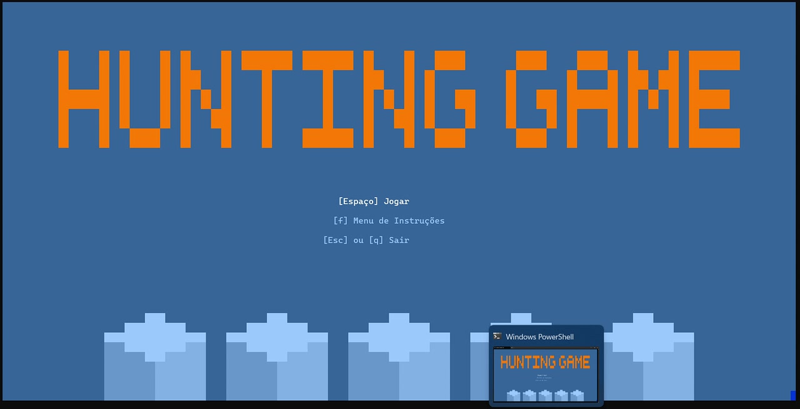
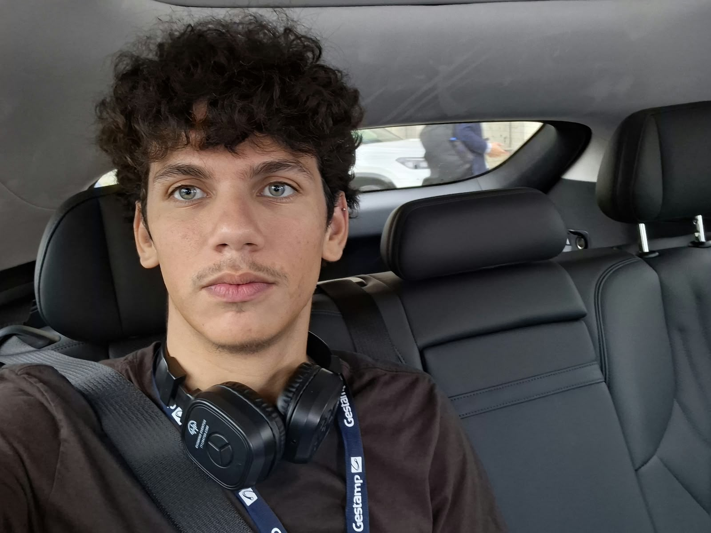
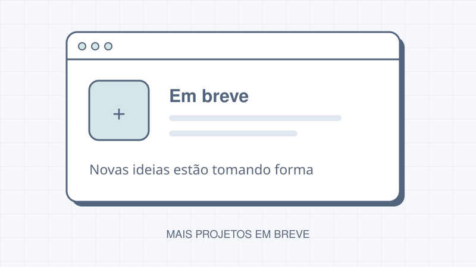

Hunting Game
Jogo estilo roguelike com exploração de labirintos, combate a monstros e progressão por três fases. Colete itens, gerencie sua vida e use o inventário para avançar.
Ciência da Computação · Insper
Graduando em Ciência da Computação no Insper, com foco em Python e interesse em cibersegurança. Transformo os aprendizados da faculdade em projetos para explorar, construir e resolver problemas.


Jogo estilo roguelike com exploração de labirintos, combate a monstros e progressão por três fases. Colete itens, gerencie sua vida e use o inventário para avançar.

Novos desafios, novas ideias e mais código. Em breve, este espaço vai reunir outros projetos da minha jornada em Computação.
Sou bolsista e graduando do 1º semestre de Ciência da Computação no Insper, além de ex-bolsista do programa Primeira Chance. Minha trajetória reúne conquistas em olimpíadas acadêmicas como a OBF, a OBMEP e a OMU, que fortaleceram meu raciocínio lógico, minha persistência e o interesse por novos desafios.
Hoje, levo essa curiosidade para a programação. Python é minha principal linguagem, e gosto de transformar o que aprendo em projetos que conectam lógica, criatividade e resolução de problemas.
Também faço parte de uma entidade de cibersegurança e da bateria universitária. Entre código, segurança e música, encontro diferentes formas de aprender, colaborar e construir algo em equipe.
Vamos criar juntos? Entre em contato ou acompanhe meus projetos.